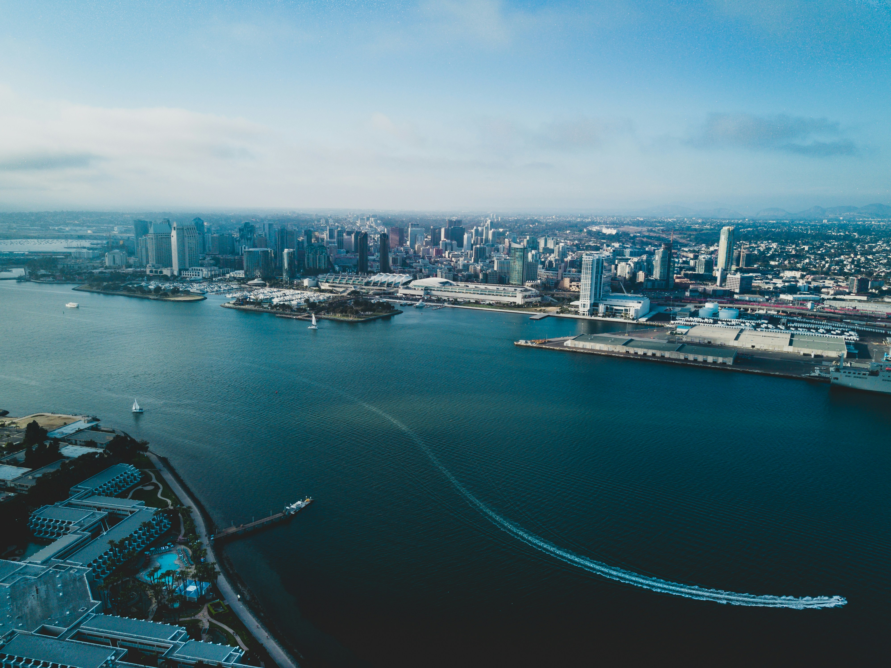

My Early Life
My life started in San Diego, California on Feb 20th, 2010 when I was born to a family of 3. I lived in a nice house in Carmel Valley with an elementary school that was only a mile away. As a kid, my parents put me in plenty of classes, starting me on piano, swim, and even martial arts at CMA Kicks. Out of all of those, I like swim the best since I was extremely good at it. It was this discovery that led me to join a team and win first in 100 freestyle.
